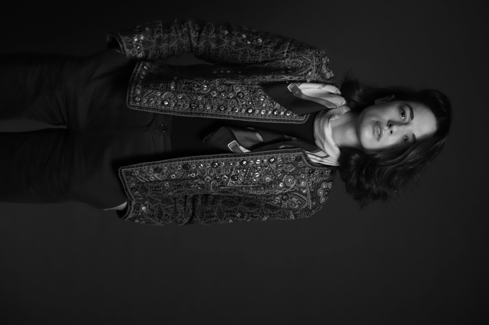
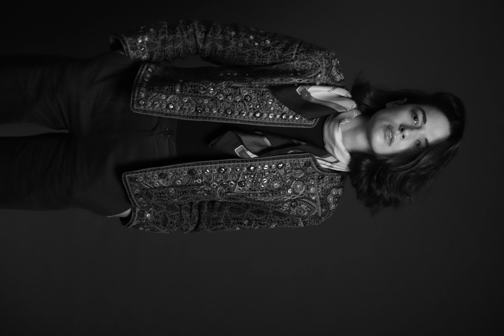
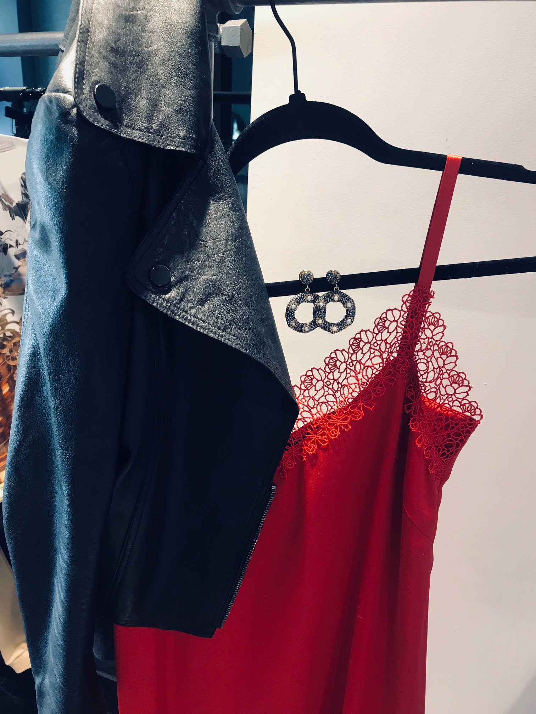

Change your relationship with style or handpicked solutions with you in mind.
You are a professional in how to deal with your day to day life but you probably don’t have much time to figure out what to wear, you try on multiple options and spend hours shopping online or in store. Your wardrobe and style is making you unhappy and you don’t really know where to start to change it?
With professional help and honest unbiased opinions we will be able to find the best way of transforming your wardrobe and developing your style.
I am a believer in defining one’s personal brand. You don’t need luxe brand to develop your own sense of style and start feeling good in your own skin. Your own brand is born out of an awareness of who you are, and ensuring your style represents that. During consultation my main goal is to identify your personal needs and desires and make them come to life. There is not one single solution for everyone but working together, we can identify the gaps and fill them with the bespoke solutions.
By the end of our sessions you will get a more defined personal style with a multifunctional wardrobe that makes you feel happy and confident. You will learn how to shop smarter investing in forever pieces that work together; how to identify and adapt trends to your needs without simply following them. Be it a special occasion or staying at home - you will feel comfortable within your own skin.
 

Understanding your body shape and complexion type will change the way you dress and shop forever. The session will give you a complete understanding about your body type, what are the best, most flattering styles
and fabrics that work specifically for you. It begins with an in-depth consultation to identify your clothing likes and dislikes, budget, lifestyle needs and your personal main preferences.We will conduct a colour and body shape analysis in order for you to know how to work with your own wardrobe and build outfits. We will use your existing items to demonstrate what works and why so you become more familiar with your own styling identity which will give you guidance on how to look for the best styling solution by yourself.
This styling service is less about actual shopping, but more about giving you the knowledge of what works and what doesn’t work, which can then be applied in your future shopping - with or without stylist help.
This service is offered online or in person, depending on your preference, geographical location and other circumstances.
Each consultation is fully bespoke, depending on the time taken and the services offered. Indicatively prices would start at £150 for consultation. Prior to commencing any project I provide a full quote for the cost for my clients.
This session will give you a clear understanding about the items that you already have: which ones work for you and which ones don’t. By exploring your wardrobe I will help you to edit and organise your clothes into ready-towear outfits. We will create new combinations so you can see your clothing in an absolutely new light. I will identify what needs updating or no longer fits you.This session covers shoes and accessories management and I will help you to mix and match items together to see what needs updating. All of us have clothing that no longer fits us or we just simply feel like it doesn’t represent who we are. I will offer my advice on how to re-sell or recycle the garments that don’t belong in your wardrobe any longer. After the wardrobe detox we will create a shopping list of the missing key items to create a proper basic capsule. Don’t worry, we will cover every aspect of your life - from workwear, to party wear , sleek smart casual or weekend relaxed looks. By the end of the session, you will have a 360 degree overview of what you already own and how it can be used in your day-to-day life.
This service can be done online or in person, depending on your preference, geographical location and other circumstances.
Each consultation is fully bespoke, depending on the time taken and the services offered. Indicatively prices would start at £100 per hour with minimum of 2 hours consultation. Prior to commencing any project I provide a full quote for the cost for my clients.

Based on the shopping list that was created after the wardrobe detox, I will research and prepare an edit of outfits and garments that suit your body type, lifestyle and compliment your already existing wardrobe. Prior to my shopping treasure hunt, we will discuss the budget and the priority goals. I’ll be showing you how to correctly select your clothing while shopping based on your body type, lifestyle, budget and colour scheme. I will share the best practices and my style tips and along the way for you to use and then carry forward into your own future shopping.
This service can be done online or in person, depending on your preference, geographical location and other circumstances. Instead of preselecting all the garments in the shop, I would flick through hundreds of different options to select the right outfits which you can get by simply following the links. I will complete my selections by advising you what would be the best combination and how to implant it in your existing wardrobe.
Each consultation is fully bespoke, depending on the time taken and the services offered. Indicatively prices would start at £100 per hour with minimum of 2 hours consultation. Prior to commencing any project I provide a full quote for the cost for my clients.
Whether your event calls for formal or smart casual wear, I be able to advise, select and support on the best look matching your personal preferences, body type and colour scheme. We will discuss all of your requirements and most importantly style ideas to create a look perfectly tailored to the occasion.
I will advise on the accessories, shoes as well as giving you suggestions for the make-up and hair styling if you wish to discuss it during the session.
This service can be done online as well as in person and, if required, we can do a rehearsal of your look in the comfort of your own home.
Each consultation is fully bespoke, depending on the time taken and the services offered. Indicatively prices would start at £100 per hour with minimum of 2 hours consultation. Prior to commencing any project I provide a full quote for the cost for my clients.
We all have different needs and desires and I’m more than happy to discuss them with you. It’s very important to find the professional that will meet your criteria and you would feel the most comfortable around. Let’s talk!